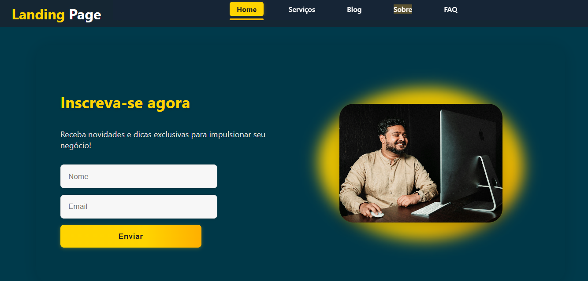

Portfólio Pessoal
Este próprio site, feito com HTML, Tailwind CSS e JavaScript, com foco em design
responsivo e animações suaves.
Ainda em desenvolvimento
Sistema de Gerenciamento de Loja
Projeto Java com classes como Loja, Produto, Endereço e Data, implementando lógica de
negócio e validações básicas.
Ainda em desenvolvimento
Loja Online
Projeto ecommerce, com banco de dados Mysql e linguagem c#, com a função de cadastro de
clientes, cadastro de produtos entre outras coisas.
Ainda em desenvolvimento

Landing Page
Projeto de landing page responsiva, desenvolvido em HTML, CSS e JavaScript, focado em
conversão e design moderno.
Ainda em desenvolvimento